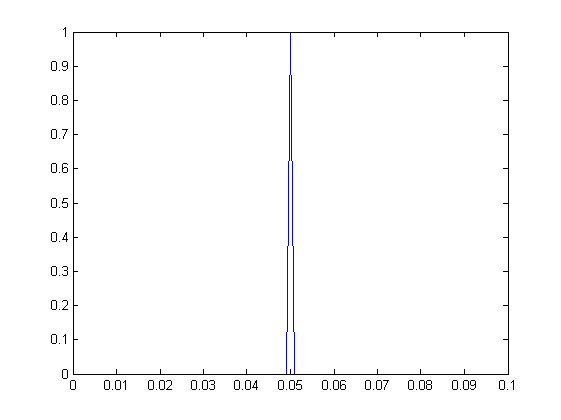
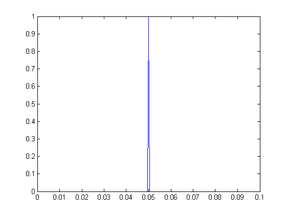
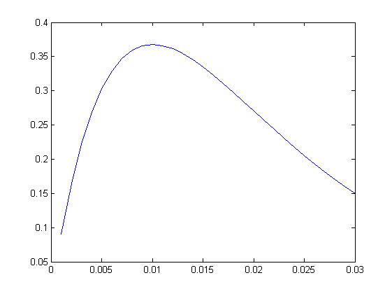
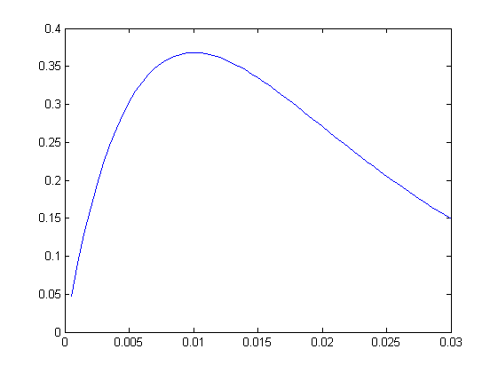
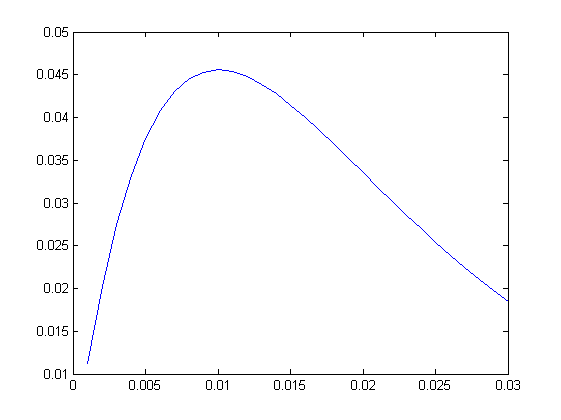
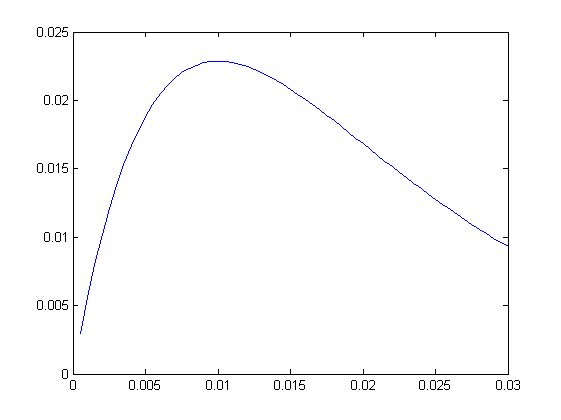
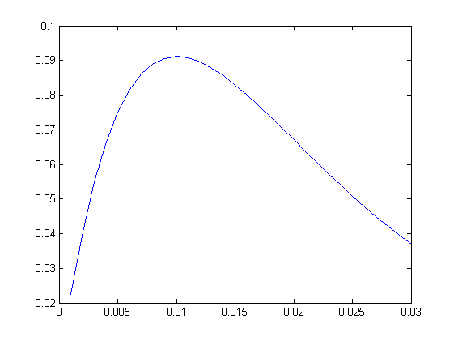
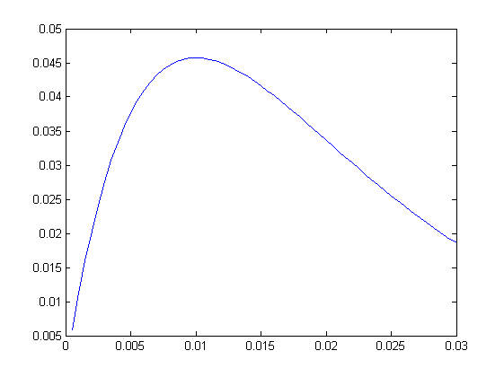
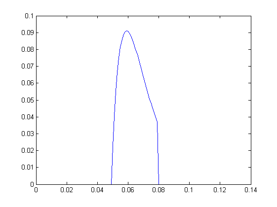
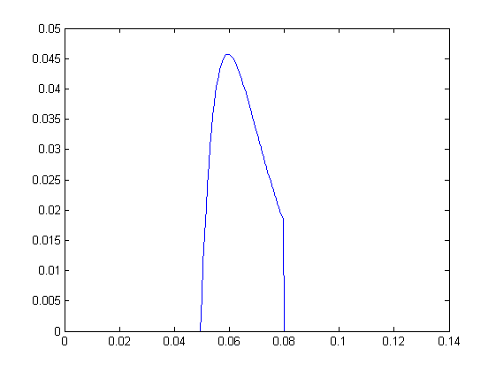

Contents
signalDuration=.1;
spikeTime= signalDuration/2;
for sampleRate=[1000 2000];
disp(['sample rate= ' num2str(sampleRate)])
sample rate= 1000
sample rate= 2000
testing convolution speculation
dt= 1/sampleRate;
signalLength=round(signalDuration/dt);
spikeArray=zeros(1,signalLength);
spikeLocation=round(spikeTime/dt);
spikeArray(spikeLocation)=1;
disp(['length of spike array= ' num2str(length(spikeArray))])
t=dt*(1:length(spikeArray));
plot(t, spikeArray)
length of spike array= 100

length of spike array= 200

convolution function
CNspikeToCurrentTau=0.01;
t=dt:dt:3*CNspikeToCurrentTau;
CNalphaFunction=...
(1/CNspikeToCurrentTau)*t.*exp(-t/CNspikeToCurrentTau);
plot(t, CNalphaFunction)
 
normalise conv function
CNalphaFunction=CNalphaFunction/sum(CNalphaFunction);
plot(t, CNalphaFunction)
disp(['area under function= ' num2str(sum(CNalphaFunction))])
area under function= 1

area under function= 1

adjust for spike current
CNcurrentPerSpike=2;
CNalphaFunction=CNalphaFunction*CNcurrentPerSpike;
plot(t, CNalphaFunction)
 
convolution
result=conv(spikeArray,CNalphaFunction);
t=dt*(1:length(result));
plot(t, result)
disp(['area under function= ' num2str(sum(result))])
area under function= 2

area under function= 2

end